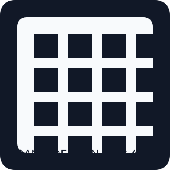

Total Terkumpul
Rp 0
Supporter
0
Target Bulanan
Rp 4.000.000
Pemasukan Bank Virtual
Ringkasan total masuk berdasarkan metode pembayaranSaldo & Penarikan
Rekening belum disimpan
Saldo dapat ditarik
Rp 0
Metode Penarikan
DANA
Riwayat Penarikan
Status pengajuan penarikan ke Bank SeabankLink Donatur
http://localhost:3000/donor.html
Bagikan salah satu alamat di bawah ke penonton di jaringan yang sama. Pastikan stream PC dan device penonton terhubung ke Wi-Fi/LAN yang sama.
Halaman Overlay
Buka Overlay
http://localhost:3000/overlay.html
Gunakan halaman ini sebagai Browser Source untuk menampilkan notifikasi donasi di OBS.
QRIS Asli

Ganti file qris.svg di folder ini dengan QR code QRIS asli dari akun kamu.
Progres saat ini
0%
Aktivitas Donasi
Update otomatis setiap 3 detikPengaturan Halaman
Di sini kamu dapat melihat alur donasi yang akan dipakai oleh penonton dan menyalin URL halaman donatur.
Nama Channel
Farizzau
Metode Publik
QRIS / Transfer Bank
Halaman Donatur
donor.html